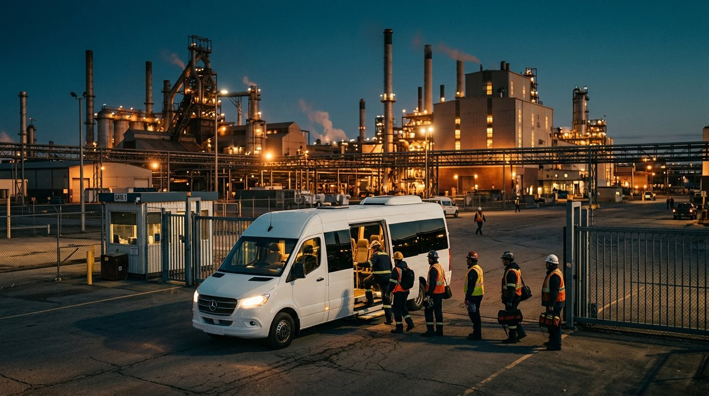
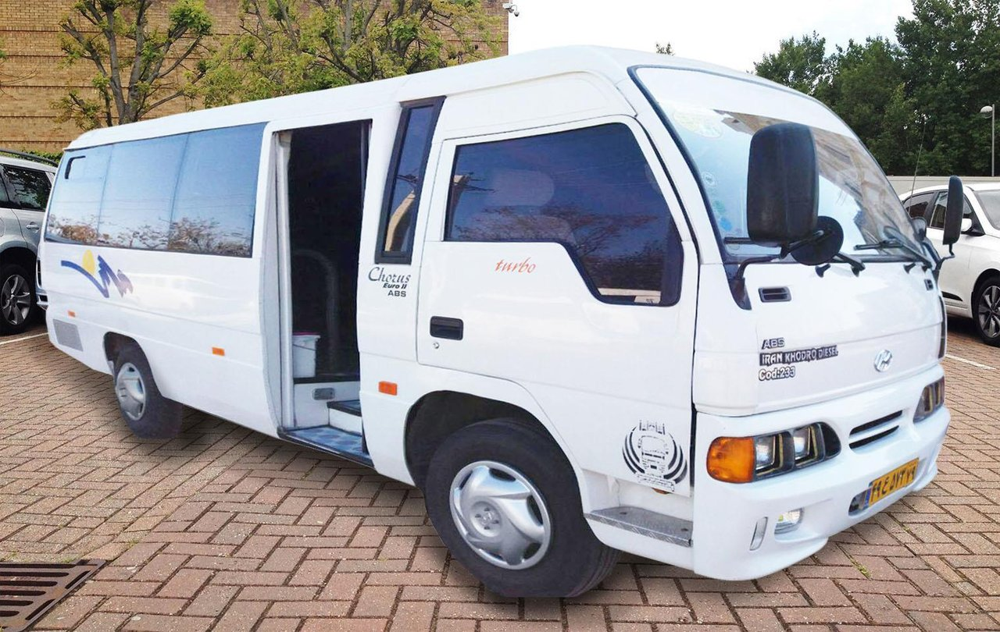
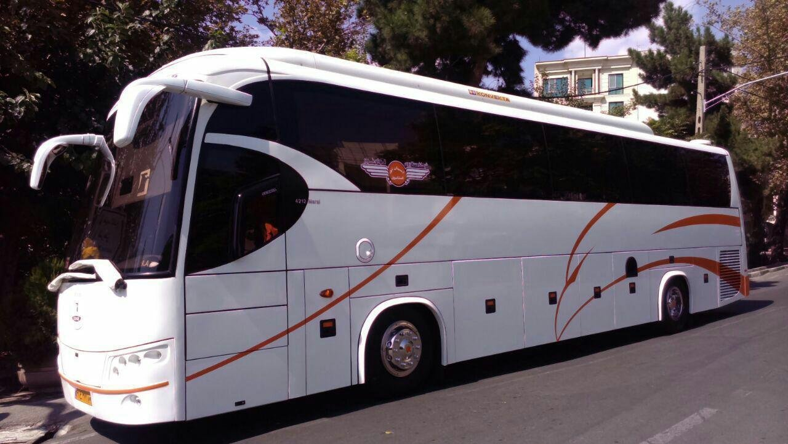

Factory Personnel Transport
Regular, safe commuting for factory personnel across every shift; with a 101-vehicle fleet, experienced drivers and transparent corporate contracts with regular reporting.

Service overview
For factories, personnel commuting is not mere transport — it is part of production discipline. A late morning service means a late production start, and an unreliable night service means a tired next shift. Qazvin Tasvir's 101-vehicle fleet keeps this cycle precise and dependable.
For years, factories such as Goldiran, Asan Pack and Shir Sahar have entrusted their personnel services to us; through transparent annual contracts, optimized routes, insured drivers and regular reporting to employer supervisors.
Advantages of this service
Shift-based services
Full coverage of morning, afternoon and night shifts
Varied fleet
Minibuses and buses matched to each factory's headcount and routes
Experienced, insured drivers
Screened, trained drivers with full passenger insurance
Regular reporting
Attendance, timing and service-status reports to the employer
Maintenance & readiness
Scheduled fleet servicing for zero unexpected breakdowns
Flexible capacity & routes
Scaling vehicles or routes as your factory grows
How we work together
Shift & route analysis
Mapping personnel residence clusters and your shift schedule
Fleet proposal
The optimal vehicle mix and proposed routes
Contract & start
A transparent contract and the start of regular service
Monitoring & reporting
Continuous performance monitoring and periodic reports
A look at our work


Frequently asked questions
What is the minimum headcount for a contract?
Factory services usually start from one full route (one vehicle's capacity); contact us for a precise plan.
Do you cover night shifts?
Yes; covering all three shifts — morning, afternoon and night — is a standard part of factory contracts.
What if our headcount grows?
Vehicle capacity and count can easily be increased during the contract term; our agreements are designed to be flexible.
Get in touch to start
Send us the details of your need; Qazvin Tasvir's experts will respond at the first opportunity.